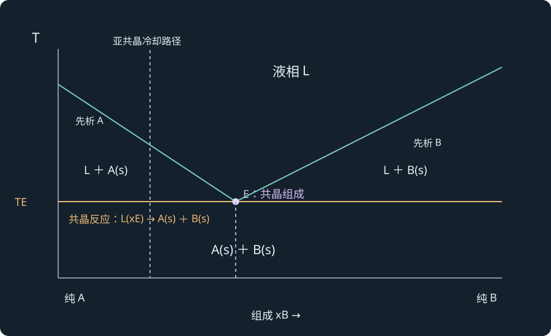
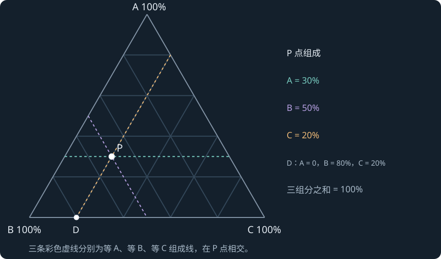

LECTURE 16 · PHASE DIAGRAMS III · 2026-11-05
液固相图：共晶、包晶、固溶体与三元组成
冷却曲线与杠杆规则 · 一致与不一致熔融 · 铁碳共析 · 区熔提纯 · 三角坐标
16.1 · COURSE NOTES
液固相图的坐标、相区和相律
本讲把前两讲的气液、液液平衡方法用于结晶、合金和提纯。横轴是组成，纵轴为温度，通常固定压力。xB 表示某相中 B 的摩尔分数，zB 表示样品总组成；质量百分数组成另用 wB 标明。比较两相数量时，横轴采用哪种组成，就用对应的摩尔或质量数量。
液相线（liquidus）是冷却时开始出现固体的边界；固相线（solidus）是低温固态区与含液体区的边界。简单共晶图中，液态 A、B 完全互溶，固态彼此近乎不溶，所以低温通常出现 A(s) 与 B(s) 两个固相。连续固溶体则在低温保留一个均匀固相。
二元体系液相区 P=1，F′=2，温度与液体组成可独立改变。L＋A 或 L＋B 两相区 F′=1，选定温度后液相组成由相界确定，固体近似为纯 A 或纯 B。L＋A＋B 三相共存时 F′=0，温度和各相组成都固定，但各相数量可随结晶过程改变。
来源：PChem1_lec16 Phase Diagram3 20261105.pdf，PDF 第 1–2 页。
16.2 · COURSE NOTES
简单共晶：液相线汇合处发生什么
两条液相线在 E 点相接，E 对应共晶组成 xE 与共晶温度 TE。共晶（eutectic）反应在冷却方向写为一个液相转化为两个不同固相：
起始液体恰为共晶组成时，在 TE 之前不会先析出单独的 A 或 B；到 TE 时两固相一起生成，潜热释放使理想缓慢冷却曲线出现恒温平台。所得共晶组织可为均匀交错的微晶或层片，但仍包含两个固相。
总组成在 E 左侧的亚共晶液体先析出 A，残余液体沿左液相线向 E 移动；E 右侧的过共晶液体先析出 B，残液沿右液相线向 E 移动。这里“先析出”是初生相，后来残液形成的是共晶组织。一个样品可以同时含初生 A 和共晶组织，而它的平衡固相种类仍只有 A、B。
来源：PChem1_lec16 Phase Diagram3 20261105.pdf，PDF 第 1–3 页。

16.3 · COURSE NOTES
从降温曲线读出结晶的三个阶段
沿固定总组成的竖线冷却：在单液相区，移除热量主要使温度下降；碰到液相线后开始析晶，释放结晶潜热，降温曲线斜率改变；到共晶温度后，剩余液体在恒温下转成 A＋B，直至液体耗尽。继续冷却后，两个固相的温度又下降。
非共晶总组成通常同时出现“开始结晶的折点”和“共晶平台”；共晶组成只在 TE 发生集中结晶；纯组分在自身熔点结晶，也可能有恒温平台。因此建立相图需比较多种已知组成的冷却曲线，不能只看到一个平台就判样品是共晶组成。
课件第 1 页固定总组成 A:B=6:1 的示例中，总体组成始终保持 6:1；随着 A 初生析出，残液的 A:B 比逐步接近共晶 2:1。图中的“液体组成改变”和“样品总组成不变”必须分别跟踪。平台的实际形状也会受过冷和散热条件影响，平衡图给出的是理想缓慢变化路径。
来源：PChem1_lec16 Phase Diagram3 20261105.pdf，PDF 第 1–2 页。
16.4 · COURSE NOTES
杠杆规则：相比例与组织比例分别计算
在两相区画水平系线，端点 xα、xL 分别给固相和液相的组成。用总量及 B 的守恒得到：
以课件 A:B=6:1、共晶 A:B=2:1 为例，按摩尔组成计算 zB=17、xE=13。接近 TE 且尚未开始共晶反应时，初生 A 为纯相，xα=0：
余下 37 的物料变成共晶组织，其中 A 与 B 按 2:1 分配，故共晶中的 A 为总量的 27，B 为 17。最终全部 A 为 67、B 为 17，而组织比例是初生 A 占 47、共晶组织占 37。这两种比例回答的问题不同。
共晶反应进行中，L、A、B 均有有限数量时，三个相量仍需补充一个条件才能全部确定；到液体刚耗尽后则可用两个固相的杠杆规则。相律的零自由度固定的是平衡强度变量。
来源：PChem1_lec16 Phase Diagram3 20261105.pdf，PDF 第 1–3；数量推导为笔记补充 页。
把摩尔比例改成质量比例
若横轴给质量分数，设同温固相 wBα=0.10、液相 wBL=0.40、总质量分数 wB=0.25，物料守恒给出两相质量相等。若图上给的是摩尔分数，则先求两相摩尔数量，再用每相平均摩尔质量换算质量。原料的 A:B=6:1 如果是质量比，应先按相同的质量口径确定共晶 2:1，或统一换成摩尔口径后再计算。
总组成和液体组成的路径
封闭样品缓冷时，总组成竖线固定；真正移动的是液相线上的残液组成。若持续把晶体取走，留下的样品边界已改变，其总组成也会变化。利用结晶提纯时，必须说明是固液一起保留、把晶体分离，还是使局部熔区移动，这样同一张相图才对应明确的操作路径。
16.5 · COURSE NOTES
共晶应用与锡铅组成的校订
共晶组成在该简单体系中具有最低熔融温度，可用于焊料、低温混合物和材料组织设计。课件列锡铅焊料温度约 183 °C，但将组成写为 67% Sn、33% Pb。常见锡铅共晶应为约 61.9 wt% Sn、38.1 wt% Pb，数据核对见 Princeton Pb–Sn 相图讲义。
NaCl—H2O 示例的共晶约为 23 wt% NaCl、−21.1 °C。温度合适时，盐溶入冰表面水层并降低液相中水的化学势，促使更多冰融化，直到新平衡或受到传热限制。完整盐水相图中的低温含盐固相需按对应水合物相区识别，本例重点是共晶最低温度与融冰条件。
细小共晶组织与宏观均匀外观相容。判断“几相”应看晶体结构和各相成分，而判断“组织”则描述这些相以什么尺度和形貌分布；显微照片中的层片不应当成新增组分。
来源：PChem1_lec16 Phase Diagram3 20261105.pdf，PDF 第 3 页。
16.6 · COURSE NOTES
反应生成化合物与一致熔融
二元 A、B 混合后可形成化合物 C。课件以 Ga＋As⇌GaAs 为例，虽然有 Ga、As、GaAs 三种化学物种，但它们之间存在一个独立反应关系，因此独立组分仍是两个。
若 C 在熔点生成组成与固体相同的液体，称一致熔融（congruent melting）。典型图中，化合物计量组成可表现为液相线的局部极大；A–C 与 C–B 两侧又可各有一个共晶。沿富 B 的某条冷却线，可先析 C，最后残液以 C＋B 共晶形式凝固。
制备 GaAs 单晶时，要选择进入 GaAs 初晶区的熔体组成，使 GaAs 先长出，并控制砷挥发、温度梯度及相平衡条件。是否接近计量组成、最终是否有剩余 Ga 或 As，取决于具体路线。判断题先在图上圈出“L＋C”的初晶区，再说明采用的冷却路径。
来源：PChem1_lec16 Phase Diagram3 20261105.pdf，PDF 第 4 页。
16.7 · COURSE NOTES
不一致熔融与包晶反应
某些化合物加热时在到达同组成液体之前，就转为另一固相与不同组成液相，这称不一致熔融（incongruent melting）。逆向冷却时，一个已有固相与液体反应生成新固相，称包晶反应（peritectic reaction）：
在恒压二元体系中，这也是三相平衡，温度与各相组成固定。制备 C 时，必须让初生 A 与适当组成的液体充分反应。C 可能包覆 A 的表面，使内部扩散变慢，因此实际生长还涉及时间与传质。
课件 CaF2–CaCl2 的 CaF2·CaCl2 化合物示例在约 737 °C 出现相应转变，液体组成标为 x(CaCl2)≈0.6。加热 C 后生成 CaF2(s) 与该组成液体；冷却制备时则需要两者按物料守恒配合反应。直接把计量组成加热成“纯 C 液体”再结晶的设想与这张图不相符。
Na–K 体系示例中，先有 Na 析出，再与富 K 的液体反应生成 Na2K；不同总组成会在包晶反应后留下 Na、继续有液体，或继续冷却至另一个共晶点。课件称“液态 Na2K 不稳定”在笔记中表述为：C 在该温度范围不形成稳定的同组成单液相，而是优先发生上述分解平衡。
来源：PChem1_lec16 Phase Diagram3 20261105.pdf，PDF 第 4–5 页。
16.8 · COURSE NOTES
有限固溶与完全固溶
Bi–Sn 之类体系的两端可有富 Bi、富 Sn 的固溶体：少量另一元素进入晶格，仍可形成单个均匀固相。两固相共存区的端点由固态溶解度曲线（solvus）给出，固相端点不再严格等于纯 A、纯 B。相量继续按同温系线计算。
Cu–Ni 的典型连续固溶体图有一条上方液相线和下方固相线，两线之间是 L＋α，线上方为均匀液相，线下方为单一 α 固溶体。在每一温度下，固液组成不同，因而结晶或熔融通常跨一个温度区间。
完全固溶且近理想时，两线围成近似透镜区；偏离理想更明显时，还可能出现熔融曲线的极小等形状。课件以 Au–Ag 和 Au–Cu 的简化图比较这种差异。高温单相和低温单相之间的曲线细节，要由具体体系的混合自由能确定。
来源：PChem1_lec16 Phase Diagram3 20261105.pdf，PDF 第 5、7 页。
16.9 · COURSE NOTES
铁碳相图：先校正晶型，再区分共析与共晶
| 相或组织 | 结构与组成 | 本讲辨析 |
|---|---|---|
| α-铁素体 ferrite | BCC 铁中的低碳间隙固溶体 | 课件误写 FCC，此处校正 |
| γ-奥氏体 austenite | FCC 铁中的碳间隙固溶体 | 课件误写 BCC，此处校正 |
| 渗碳体 cementite | Fe3C，化合物固相 | 不同于碳在铁中形成的固溶体 |
| 珠光体 pearlite | α＋Fe3C 的层片状共析组织 | 由固相转变形成，含两个相 |
共晶从液体生成两个固相，共析从一个固相生成两个固相。铁—渗碳体图的共析点常列约 0.76–0.77 wt% C、727 °C；课件采用约 723 °C 的教学近似。此页按亚稳 Fe–Fe3C 图解释，避免与包含石墨的稳定平衡图混用。晶型与共析组织核对见 Princeton 铁碳相图资料。
低于共析组成的钢缓冷时先析铁素体，余下奥氏体再形成珠光体；高于共析组成时可先析渗碳体，再发生共析。材料硬度、脆性和韧性受相比例、层片间距、晶粒和热处理共同影响；课件将特定碳含量直接对应工具用途的例子用来说明组织变化，而非统一性能界限。
来源：PChem1_lec16 Phase Diagram3 20261105.pdf，PDF 第 6 页。
16.10 · COURSE NOTES
区熔提纯：移动熔区把杂质推向一端
在长条晶体上建立一个窄熔融区，并使它沿样品缓慢移动。若杂质在液体中的平衡溶解倾向大于在固体中，前端熔化把杂质带入液体，后端再结晶时多数杂质留在熔区，因此随熔区向末端富集。重复多次并切除富杂质尾端，可提高其余部分纯度。
k 为界面平衡分配系数，两边浓度须采用相同定义。k 越接近 1，单靠这一路径的分离驱动力越弱；k>1 时富集方向与简单“推向尾端”的示意相反。实际效果还受熔区长度、移动速度、扩散和对流影响。
来源：PChem1_lec16 Phase Diagram3 20261105.pdf，PDF 第 8 页。
16.11 · COURSE NOTES
三元相图：三角坐标与固定温压相律
A、B、C 三个组分满足 xA＋xB＋xC=1，所以只需两个独立组成变量。等边三角形的每个顶点代表一种纯组分；一条边表示第三组分含量为零的二元混合物；内部代表三元混合物。
与 BC 边平行的直线给相同的 xA，与 CA、AB 平行的线分别给相同的 xB、xC。也可用点到对边的垂直距离占整条高的比例表示相应组成。课件 P 点为 A 30%、B 50%、C 20%，D 点为 B 80%、C 20%、A 0%。
单相时有两个独立组成变量；两相时有一个强度自由度，共存相组成沿一组系线联系；三相时相组成固定。若三相组成已知，总体点在三相三角形内，其数量可由总量和两个独立组分守恒确定。总体组成的移动依然可以改变相量，而不改变三相端点。
来源：PChem1_lec16 Phase Diagram3 20261105.pdf，PDF 第 8 页。

三相相量的求法可写成：n1+n2+n3=n，以及对 A、B 各写一个组分守恒。C 的守恒由三组分总和为一自动推出，因此无需再独立增加一个方程。总组成位于两端相组成的连线外，或位于三相三角形外时，预设的共存相组合就需要重新检查。
16.12 · COURSE NOTES
相图分类、公式表与推导题
| 类型 | 冷却时的关键变化 | 检查方法 |
|---|---|---|
| 简单共晶 | L→A＋B | 找两液相线相接的最低点和三相温度 |
| 一致熔融化合物 | 同组成 L↔C | 找计量组成和局部熔融极大 |
| 包晶/不一致熔融 | L＋A→C | 确认反应前后都保留固相角色 |
| 连续固溶体 | L→L＋α→α | 两线间读固液端点与相量 |
| 共析 | γ→α＋β，全为固态 | 先核对各符号代表物态 |
| 区熔 | 界面分配使杂质迁移 | 看 k 的定义和大小 |
公式集中复习：恒压相律 F′=C−P+1；固定温压 F″=C−P；两相数量比为对面系线长度之比；区熔分配系数比较界面两侧杂质浓度。计算前先检查横轴的组成定义、相数、端点组成和整体样品边界。
推导题一：由总量与 B 守恒推杠杆规则，并用 z 趋近任一端点检查极限。推导题二：重算 A:B=6:1 的初生 A 与共晶组织比例，说明为何总固相比例不同。推导题三：从物种数减去独立反应数，说明 Ga、As、GaAs 体系 C=2。推导题四：用三个相量和两个独立三元组分守恒，解释固定温压下三相组成固定而相量仍可调。
本讲最容易混淆的三个词：组分是描述组成所需的最少独立物质；相是结构和物性均匀的部分；组织描述相如何在空间中分布。记忆共晶、珠光体和初生相时都应回到这三层，先判相数再算数量。
来源：PChem1_lec16 Phase Diagram3 20261105.pdf，PDF 第 9；推导题为笔记补充 页。